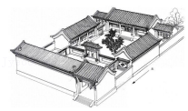

2019年北京市中考政治试题 · 选择题 第11、12、13、14、15题
11．（2分）为了更好地保护非物质文化遗产，有市民给相关国家机关提了一些建议。下列建议中，应由全国人大及其常委会行使职权的是（ ）
A．对侵犯非物质文化遗产知识产权的案件提起公诉
B．直接打击侵犯非物质文化遗产知识产权的行为
C．公开审理侵犯非物质文化遗产知识产权的案件
D．加强对非物质文化遗产保护法实施情况的检查
12．（2分）2019年1月，北京市《关于加强城市精细化管理工作的意见》正式公布。《意见》指出：本市将探索推行“个人诚信分”工程，守信者可以在教育、就业、创业等领域享受到优先便利，失信者将被差别化对待，甚至遭到惩戒。推行“个人诚信分”工程有利于（ ）
①倡导公民淡化个人利益，重视他人权益
②大力弘扬诚信文化，营造良好社会环境
③倡导公民既恪守诚信，又尊重他人隐私
④完善社会信用体系，珍惜个人诚信记录
A．①②B．①③C．②④D．③④
13．（2分）2019年世界园艺博览会北京园以“四合院”为核心景观，让全世界从一个“小院落”品味“大北京”。这是因为北京“四合院”（ ）
①承载着老北京的民俗民风
②展示了北京的开放与包容
③体现了东西方文化的交流
④延续着传统文化的生命力

A．①②B．①④C．②③D．③④
14．（2分）2018年第二批全国“新时代好少年”小李长期积极参加首都博物馆、首都图书馆义务讲解，以及社区绿色低碳宣传活动，组织同学为边远地区贫困小学捐赠衣物和书籍，参加“爱加艾减”国际公益项目，帮助非洲儿童接种疫苗。这启示我们要（ ）
A．积极实战，服务社会B．遵守制度，维护规则
C．走出国门，展示风采D．努力学习，体味生活
15．（2分）中学生小叶无意中把雨伞倒挂在围栏上，伞里接满了雨水。他想，北京那么缺水，要是能制作一个收集雨水、自动浇花的装置就好了，由此引发了他的创新设计。经过不断研究和反复实践，他发明的节水器获得国际青少年节水大赛一等奖。这说明（ ）
A．创新要善于思考，付诸行动
B．没有天赋的人不能进行创造
C．科技创新都能推动可持续发展
D．中学生在万众创新中发挥主要作用